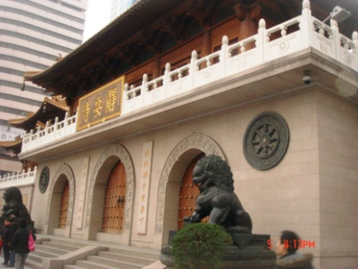

[转寄/推荐][转贴][删除][修改][设置可RE属性][上一篇][返回讨论区][下一篇][回文章][同主题列表][同主题阅读][从这里展开]
发信人: hanxiaomi (函小米), 信区: outdoor
标 题: 走过路过不要错过~静安寺城市定向报名开始啦~~
发信站: 饮水思源 (2012年11月13日00:02:00 星期二)
经过漫长的准备，第四届“I ❤ 思思”城市定向越野大赛终于与大家见面了，现将
面向全校开放报名。
比赛时间：2012年11月25日（周日）13:00
问：何为城市定向越野？
答：Orienteering（定向）源自瑞典语Orientering 一词，其原意是借助地图和指北针，
穿越未知地带，后逐渐发展成为一种户外休闲运动。而城市定向越野，就是钢筋水泥土森
林间的定向了，相比于传统野外定向，城市中复杂交汇的道路与富于现代化气息的景物变
换，显得更加具有挑战性与吸引力。而我们所处的上海是一个高度现代化的国际化大都市
，正是一个城市定向的好去处，每一次定向都能给参与者带来一段不同寻常的经历。
问：此次定向越野有什么特色呢？
答：这次定向越野是由校思思工作室与野外生存协会共同主办，活动地点均为校外上海有
特色景点，而经历了前三次卢湾校区等地的定向越野，我们丰富的经验一定能给您带来最
完美的体验。同时本次活动人数众多，覆盖面广，是一个交友的大平台，而我们采取的小
组竞争模式以及小游戏的插入让整个越野富于竞争性，在竞争的同时让小组成员之间相互
讨论合作，锻炼团队协作能力，最后，每次活动结束后的奖品也是一大亮点哦。
地点介绍：
第四次城市定向越野的地点是上海市静安区的静安寺，整个定向涵盖静安寺周围的大部分
景点，在越野的同时又是一次不错的观光旅行。
 screen.width - 200){this.width = screen.width - 200}">
|
[转寄/推荐][转贴][删除][修改][设置可RE属性][上一篇][返回讨论区][下一篇][回文章][同主题列表][同主题阅读][从这里展开]